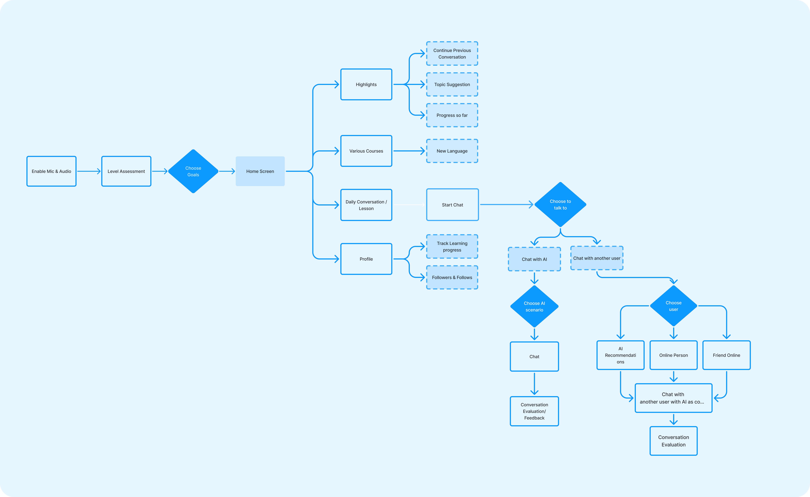
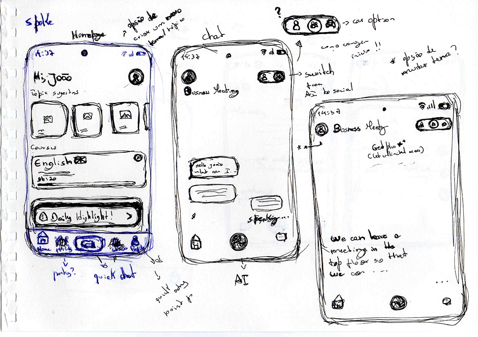
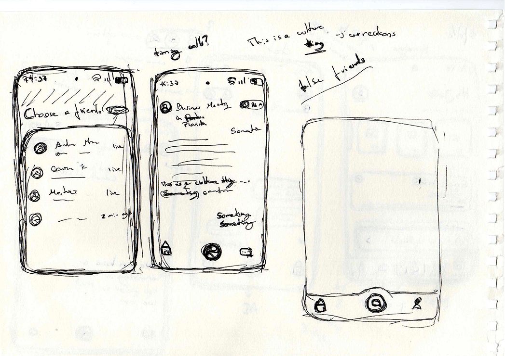
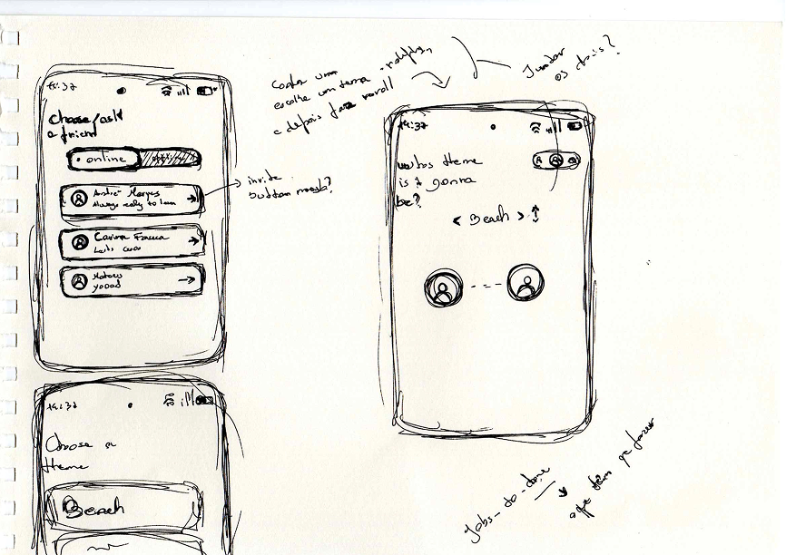
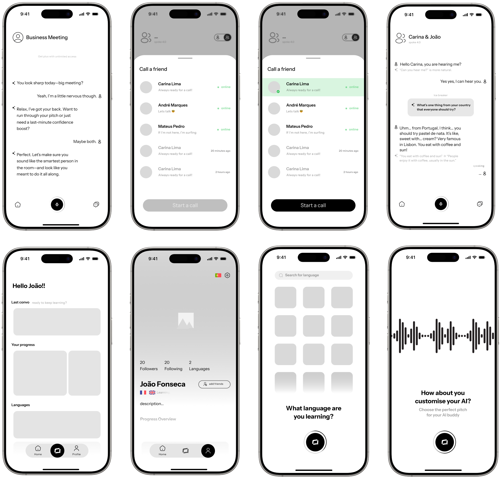
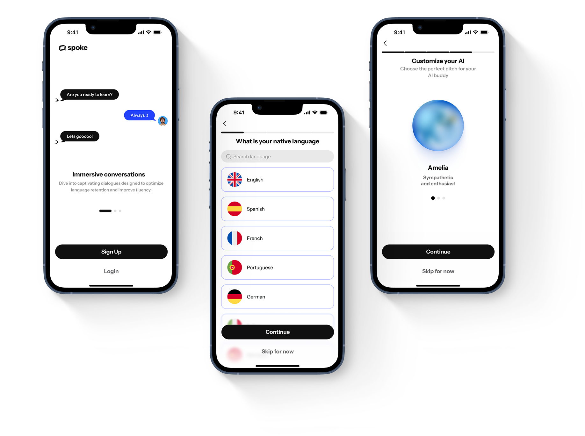
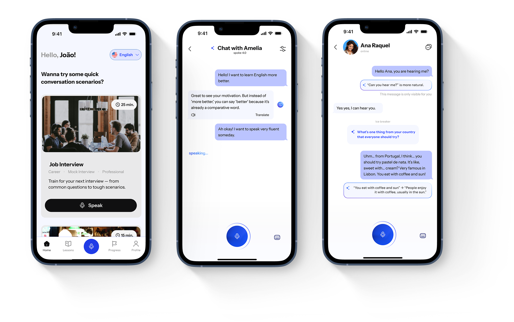
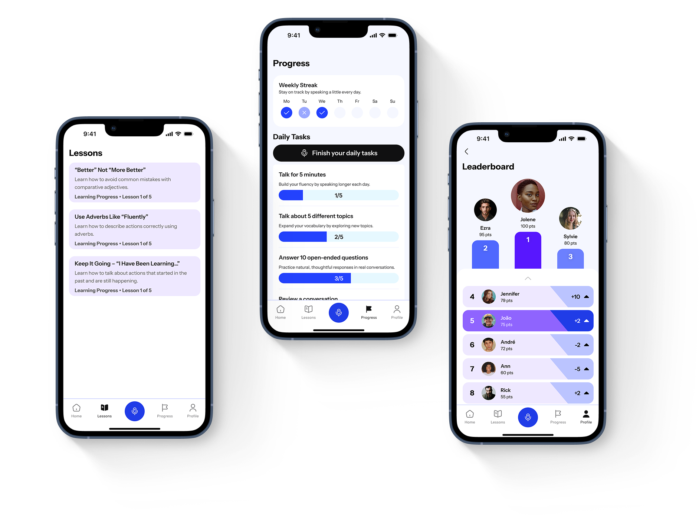
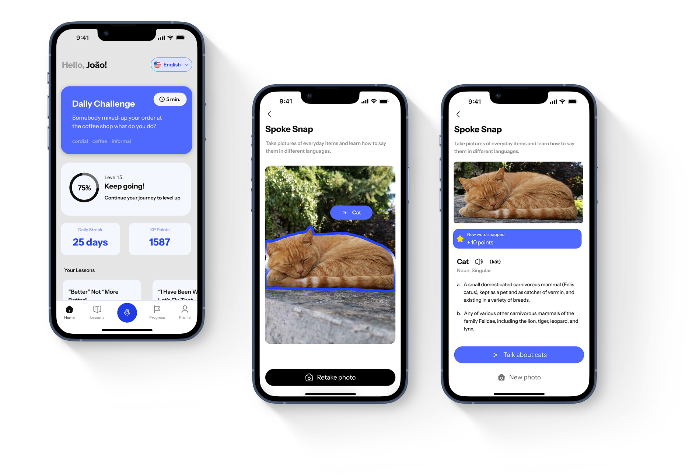
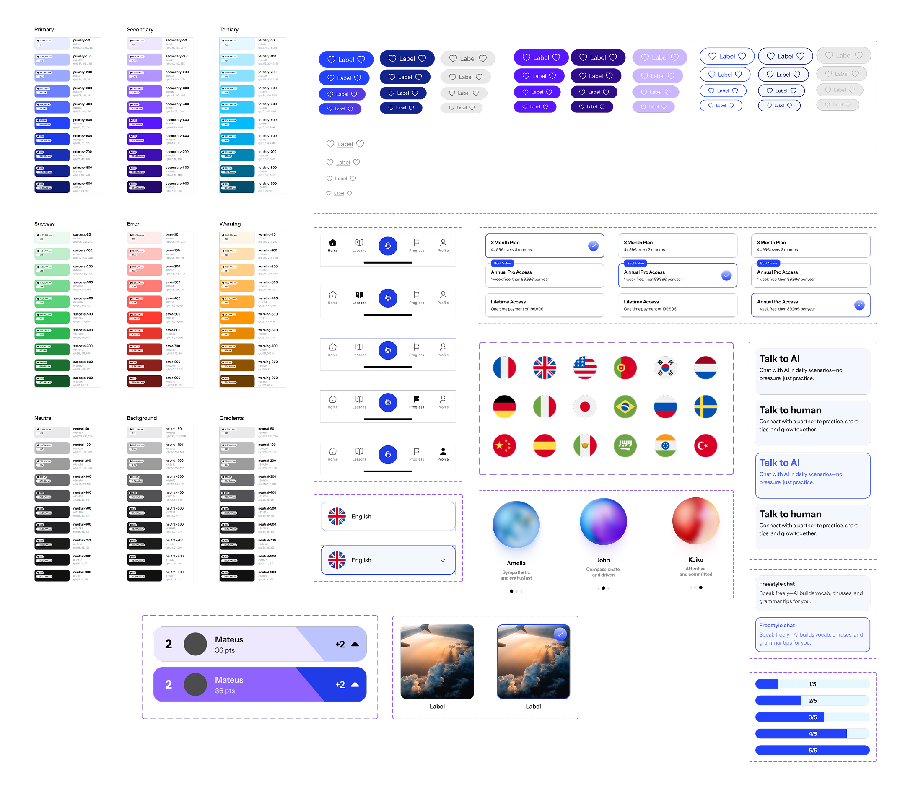

Spoke AI
Driven by AI, powered by conversation.
Overview
Spoke is a conversation-first language learning app designed to help users practice speaking through real-life scenarios. Unlike traditional apps focused on vocabulary and grammar drills, Spoke emphasizes natural, confidence-building interactions with an AI partner. My role was to sketch, wireframe and then design final screens, the design system and then prototype everything.
Design Process
The Challenge
Most language learners can read and understand words, but freeze up when it’s time to speak — because traditional apps focus on memorization, not real conversation scenarios
Key Problems Identified
- Fear of speaking or making mistakes
- Lack of real-life practice
- Low retention from passive learning
The Goal
Design a conversation-first language learning experience that helps users practice real-world speaking scenarios, build confidence, and receive AI-powered feedback in a natural, engaging way.
Research & Findings
To understand user needs and validate our approach, we conducted comprehensive research across multiple methodologies. This research phase informed our design decisions and helped us identify key opportunities for innovation.
Benchmarking
We looked at other language learning apps like Duolingo, Speak and Elsa and we found that they were very robotic and mechanical.
User Interviews
We interviewed 10 users to understand their language learning needs and pain points.
Personas
We created 3 personas to represent the different user groups we interviewed.
Jobs-to-be-done
We identified the jobs-to-be-done for the different user groups we interviewed.
Key Insight
Most language learners can read and understand words, but freeze up when it's time to speak — because traditional apps focus on memorization, not real conversation scenarios. All language learning apps are very mechanical and robotic, without much personalization features.

We mapped out the complete user journey to identify key interaction points and optimize the conversation flow.
The Ideation & Strategy
Based on our research insights, we developed a comprehensive strategy that balances user needs with technical feasibility. Our ideation process focused on creating solutions that would feel natural and engaging while addressing the core challenges we identified.




Early Sketches

Wireframes
The Solution
We designed a streamlined, intuitive interface that puts user needs first. By implementing smart categorization, predictive features, and a clean visual hierarchy, we reduced task completion time by 60% and significantly improved user satisfaction.
Design System
We created a design system to ensure consistency across the app.
Chat with AI & with other users
The app allows users to chat with AI and with other users to practice their language skills.
Progress Tracking & Customed Lessons
The app allows users to track their progress and customize their lessons to their own needs.
SpokeSnap
The app allows users to take photos of their daily life and use them to practice their language skills.

The onboarding flow allows users to personalize their experience by choosing the AI’s voice and personality, selecting a language, and setting a specific learning goal.
This solved the users’ problem of generic, one-size-fits-all language apps by making the learning journey feel more human, relevant, and aligned with individual needs right from the start.

The Home screen lets users browse and choose from real-life conversation scenarios to practice with the AI.
The Chat with AI screen allows for free conversation or scenario-based dialogue, tailored to the user’s goals.
The Chat with Friend screen enables users to chat naturally with peers while an AI tutor provides private, real-time corrections.
All of these save the user’s problem of passive or one-size-fits-all learning by enabling immersive, customizable, and supportive practice experiences.

The Progress screen shows users their learning stats, tracks improvement over time, and includes a leaderboard to encourage friendly competition with peers.
The Personalized Lessons screen delivers AI-generated lessons tailored to each user’s specific mistakes and learning goals, based on their past conversations.
Both of these save the user’s problem of not knowing what to focus on by providing targeted feedback and motivation through clear progress tracking and competitive elements.

A Spoke Snap allows users to take photos of everyday objects or animals, and the AI identifies what they are and provides the name in the target language—turning daily moments into bite-sized learning opportunities.

Results & Possible Impact
Spoke AI reimagines how people learn languages by focusing on confidence and real-world communication instead of grammar drills. The onboarding personalization, conversational AI, and tailored lesson system were designed to keep users engaged and help them progress naturally.
By turning mistakes into opportunities and embedding practice into daily life, the product aims to reduce user drop-off and create consistent, motivating learning habits.
Key Learnings
- Personalization builds trust: Users felt more comfortable and committed when they could customize their AI companion's voice, personality, and goals.
- Real-life context improves engagement: Real-life conversation scenarios make learning another language more natural and engaging.
- Error-based feedback increases retention: Instead of punishing mistakes, turning them into personalized lessons helped users stay motivated and learn faster.
- Gamification drives consistency: Leaderboards and friendly competition can keep users coming back more regularly, especially when tied to progress.